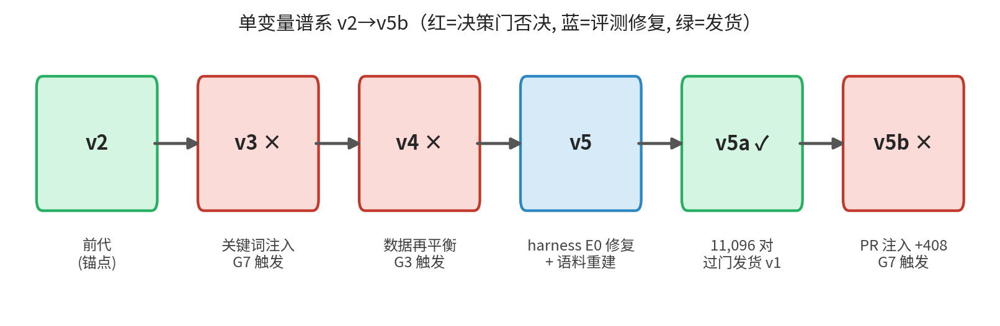
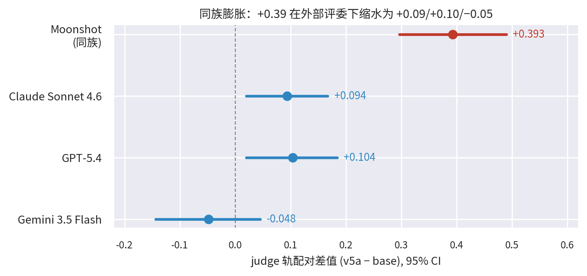
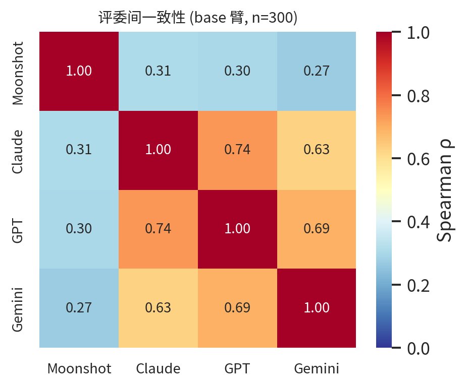
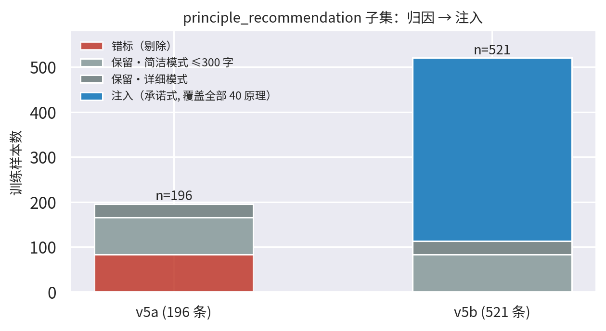

罗佳1, · 黄思源2, · 杨宁3
1Meerkat AI · 2Insentek · 3CBCTech
arthur.lok@innoenterprise.com · siyuan.huang@insentek.com · christina.yang@cbctech.com
模型：https://huggingface.co/Meerkat-AI/Meerkat-TRIZ-v1
代码与基准：https://github.com/coidea-sys/meerkat-triz
2026 年 7 月（中文版 2026 年 8 月，数据与英文版 v1.3 口径对齐）
TRIZ（发明问题解决理论）是工程实践中应用最广的系统性创新方法论，但既有将 TRIZ 与大语言模型（LLM）结合的工作全部停留在对通用模型的提示词、检索或多智能体编排层面。我们发布 Meerkat-TRIZ——据我们所知，首个公开发布的 TRIZ 领域微调 LLM：在 Qwen3.6-35B-A3B MoE 基座上训练的 LoRA 适配器（可训练参数占 0.24%），训练语料为覆盖六类 TRIZ 任务与安全拒答的 1.1 万条课程样本。由于领域宣称的可信度不超出其测量的可信度，本文的第二贡献是一套能够经受对抗性审查的评测方法学：(i) TRIZ-Bench——300 题、六任务的基准，题目与关键词集公开；(ii) 双轨协议——客观关键词轨与反冗长 LLM 评委轨配对；(iii) 全程固定种子的配对 bootstrap 显著性检验；(iv) 跨家族评委面板——家族回避制度与断路器：当同族评委与外部共识矛盾时冻结发布；(v) 八门决策程序（G0–G8），曾多次捕获单指标排行榜会漏掉的回退。应用这套装置，我们发现：Meerkat-TRIZ v1 在同族评委下相对 35B 基座提升 +0.39（±0.10，95% CI），但在两位外部评委下仅 +0.09 ~ +0.10，第三位外部评委下为 −0.05——一种约 4 倍的膨胀模式，单一评委下无法察觉。等长对照随后分离了残余混淆：当基座被指示对齐微调模型的回答长度时，同族增益完全消失（−0.07，不显著），而基座仅靠写短自身得分即上升 +0.46——然而三位外部评委中的两位认为，等长后的基座显著低于微调模型（+0.19 ~ +0.27）。长度一直在掩盖一个真实的内容质量增益：微调模型在等长预算下更好，在自然长度下以 0.4× 的回答篇幅交付内容，并保住基座被迫写短时保不住的关键词覆盖。在客观关键词轨上，微调模型与基座完全持平（±0.0001），且两者的 TRIZ 关键词覆盖均超过 GPT-5.4、Claude Sonnet 4.6、Claude Opus 4.8 与 Gemini 3.5 Flash；在评委轨上最强前沿模型仍然领先，而 Claude Opus 4.8 得分显著低于 35B 基座。120 题通用能力探针显示领域微调未造成显著能力损失（相对前代 −1.25pp，门限 −5pp）。我们发布模型、评测 harness、公开基准与全部评委缓存，使本文每个数字都可独立复算。
TRIZ（Teoriya Resheniya Izobretatelskikh Zadach，发明问题解决理论）由阿奇舒勒（Altshuller）从数十万件专利的分析中发展而来，将发明编纂为矛盾的解决：在改善一个工程参数的同时避免另一个参数的恶化，其工具包括 40 个发明原理、矛盾矩阵、分离原理与 ARIZ 算法。尽管 TRIZ 在产业界广泛采用，它仍然是专家绑定的：把一个混乱的真实问题映射到正确的标准矛盾、再有理有据地选定正确的原理，恰恰是从业者觉得最难的一步。
大语言模型是降低这一门槛的天然载体，已有若干团队探索了这条路线 [1–4]。但这些工作都把 LLM 当作由提示词、检索或智能体管线操控的通用推理器：没有一项工作在领域上训练模型，也没有一家采用 LLM-as-judge 文献已证明必要的统计装置 [5, 6]。两个问题因此仍然开放：(1) 领域微调是否真的能把 TRIZ 任务质量推进到强基座或前沿模型已达水平之上？(2) 当最顺手的测量仪器——与训练数据生成器同族的 LLM 评委——本身就可疑时，这样的宣称应当如何测量？
本文回答这两个问题。我们的贡献是：

图 1 单变量谱系 v2→v5b。每代恰好改变一个因子（下方标注）；红色世代被决策门拒绝，蓝色修复了测量 harness，绿色以 Meerkat-TRIZ v1 发布。
第 2 节定位既有 TRIZ×LLM 工作与 LLM-as-judge 文献；第 3 节描述数据与训练；第 4 节定义评测装置；第 5 节报告结果（含前沿排行榜）；第 6 节分析失败模式与评委偏差；第 7 节是异常详细的局限节；第 8 节总结。
TRIZ 遇见 LLM：只有提示，没有训练。 AutoTRIZ [1] 以提示结构化的 LLM 调用自动化 TRIZ 构思，在教材案例上评测；TRIZ-GPT [2] 在 TRIZ 工作流内比较 GPT-3.5/4 的提示策略；TRIZ Agents [3] 将方法论分解到多智能体管线；Gusarov [4] 把 TRIZ 作为材料科学推理的脚手架配合本地模型。共同特征：模型权重从未被触碰；评测靠案例研究或启发式 LLM 打分，无显著性检验；不存在公开基准。我们的工作精神上互补——保留 TRIZ 的结构化问题表述作为任务定义——但机制上正交：通过监督微调做领域适配，并把测量当作一等交付物。
领域微调。 参数高效微调 [10, 11] 已让单卡领域适配成为日常。稀缺的是对"据此宣称什么"的纪律。我们的训练配方刻意朴素（LoRA、冻结超参、两 epoch 余弦视界）；新意不在优化器而在围绕它的决策程序：每一代只改一个变量，且必须通过八道自动化检测门。
LLM-as-judge 及其偏差。 Zheng 等 [5] 确立了规模化 LLM 评审并记录了位置与冗长偏差；Panickssery 等 [6] 证明评委偏爱自己的生成物；自动竞技场的等长控制变体 [7] 之所以存在，正是因为评委奖励长度。我们的设计引入这些教训：rubric 中的反冗长条款、harness 开发期的位置互换验证、固定温度打分，以及——最重要的——把任何单一评委、尤其是数据生成者同族的评委，当作有待外部评委证伪的假设而非真值。
基准与污染。 整体性多指标评测 [8]、活更新的基准 [9] 与公开可复现 harness 启发了我们的发布形态：公开题目与关键词集、扣留参考答案、文档化去污（字符 3-gram Jaccard，阈值 0.5，0.4–0.5 人工审查带）、版本化快照，以及全量评委缓存披露——每个表格单元都可独立复算。
Meerkat-TRIZ v1 在 Qwen3.6-35B-A3B [12]（256 个路由专家的 MoE 基座）的十二个共享投影模块（q,k,v,o_proj、in_proj_qkv,z,b,a、out_proj、gate,up,down_proj）上挂载 LoRA 适配器 [10, 11]（r=64，α=128，dropout 0，RSLoRA 关）。仅 0.24% 参数可训练；路由专家本身未动。训练为纯 BF16（免量化）的监督微调 [13]，单台统一内存加速卡，batch 1 × 梯度累积 8，学习率 2×10⁻⁴、余弦调度（视界两个 epoch，四 epoch 上限为保险），最大序列 2048，仅 completion 计损，种子 42。超参在更早世代经小规模扫描确定后冻结：此后每一代只改数据，保持谱系内单变量可比性（表 1）。
v5 线语料派生自经清洗的中文 TRIZ 教材、课件与会议文集，由模型生成的长答在硬质量门（长度带、尾部模板黑名单、去重）下扩写，并对评测金标做字符 3-gram Jaccard 去污（≥0.5 剔除；0.4–0.5 人工审查）。发布的 v1（内部代号 v5a）训练集为 11,096 对 prompt–completion；最近的 v5b 世代为 11,421 对，含七个子集：概念讲解（2,996）、创新评估（3,037）、案例生成（2,857）、ARIZ 引导（1,442）、矛盾分析（313）、原理推荐（521）、安全拒答（255）。
原理推荐子集值得单独说明，因为它是本文贯穿的案例研究（第 6 节）。对上一世代的归因发现：该子集最小（196 条）、72% 为 300 字封顶的"简洁模式"样本，且最严重的是 42% 错标（ARIZ 资源题、标准解题、专利分析题挂着原理推荐标签）。v5b 世代审计剔除 83 条错标样本，并注入 408 条新生成样本——答案必须承诺具体的编号原理并给出依据、过对冲措辞过滤（"可能涉及/可以考虑"类措辞拒收）、无缺漏覆盖全部 40 个发明原理、过金标去污。
表 1 模型谱系。每行相对前代恰好改变一个变量；发布/拒绝裁决由 G0–G8 门产生（第 4.5 节）。
| 世代 | 变更 | 门裁决 | 备注 |
|---|---|---|---|
| v2 | v5 线语料重建 | 发布 | 前代基线 |
| v3 | 关键词富化数据推送 | 拒绝 | judge 轨回退 |
| v4 | 数据再平衡 | 拒绝 | 概念讲解 −8 关键词 |
| v5 | 新金标 + 语料 | 被取代 | 训练协议缺陷 |
| v5a | 协议修复（E0） | 发布（即 v1） | 发布模型 |
| v5b | PR 审计 + 注入 | 拒绝 | G7 触发 ×2；无外部确认 |
基准含 300 道中文题，覆盖六个任务族（概念讲解、矛盾分析、原理推荐、ARIZ 引导、案例生成、创新评估；每族 30–60 题），每题含题目、参考答案与期望关键词集。题目与关键词集公开（CC-BY-NC）；参考答案扣留以减缓基准衰减。所有模型的生成协议一致：一条 TRIZ 专家系统消息，最多 2048 新 token，API 允许处确定性解码。
关键词轨（客观）。 逐题期望关键词命中率，使用人工维护的别名表（子串 + 确认同义词），完全确定、任何人可从公开文件复算。
judge 轨（语义），臂 A。 LLM 评委对照参考答案按五个维度（准确性、完整性、TRIZ 正确性、结构、总体）给每题打 0–4 分，含显式反冗长条款（"长度不是质量的证据"），输入完整不截断，温度 0，每请求五题，批量解析失败降级为逐题重试，评委系统提示固定。臂 B 变体只在同长度桶内配对以控制长度混淆，但合格配对仅 17/300，功效不足；我们报告臂 A，并把长度混淆记为未清测量债务（第 7 节；该问题已由第 5.5 节等长对照在方向上解决）。
全部对比逐题配对：逐题差值的配对 bootstrap（10,000 次重采样，种子 42）、pass 率不对称性的 McNemar 精确检验、比率的 Wilson 区间、评委间一致性的 Spearman ρ。本文任何宣称都附置信区间；"显著"一律指 95% CI 不含零。
每个臂由同族评委（Moonshot）与三家厂商的外部评委（Claude、GPT、Gemini 家族）评分。两条规则使面板具有对抗性：家族回避——评委永不评自己家族的生成物；逐评委全披露——不跨评委平均，因为平均恰好掩盖我们想要检视的分歧。
发布由八道自动化检测门依据配对统计结果裁决：G0 拒答模板命中率 ≤2%；G1 对 base 的 judge CI 下界 >−0.15；G2 对前代 CI 下界 >−0.05 且至少一轨显著为正；G3 关键词回退归因（区分真回退与评分伪影）；G4 小格（n<30）子集仅描述性；G5 ARIZ rubric 优先；G6 通用能力探针回退 >−5pp；G7 双轨矛盾断路器（两轨显著反向）；G8 跨家族矛盾断路器（同族显著为正而全部或多数外部评委显著为负 ⇒ FAIL）。任何 FAIL 保留前代；任何 SKIP 冻结发布等待数据。门套件回溯测试复现全部历史发布/拒绝裁决，包括表 1 中的两次拒绝。
120 题、六类的通用中文探针（无 TRIZ 内容），在中性系统提示下对 base、前代与候选运行，检测领域微调的能力牺牲。
表 2 是本文的中心表。同族评委下，Meerkat-TRIZ v1（v5a）在 0–4 量表上相对基座提升 +0.393 [+0.297, +0.490]——任何单一评委论文都会印上头条的数字。外部评委下，同样的配对差值为 +0.094 [+0.020, +0.167]（Claude）、+0.104 [+0.020, +0.184]（GPT）、−0.048 [−0.144, +0.045]（Gemini）：两个显著为正但约小 4 倍，一个与零无别。方向经受了验证，量级没有（图 2）。即便这个缩水后的模式仍残留长度混淆——基座回答远长于微调模型——第 5.5 节将展示：等长对照下同族差值完全消失，而三位外部评委中的两位在同一等长臂上发现微调显著更好；我们据此重述微调模型的收益。与此同时，客观关键词轨完全持平（0.6384 vs 0.6383，差值 −0.0001 不显著），因此我们报告诚实的复合结论：微调模型增加了被评判的质量而没有增加关键词覆盖；质量增益的大小取决于谁来评——以及在同族评委下，取决于回答有多长。
表 2 Meerkat-TRIZ v1（v5a）vs 基座，TRIZ-Bench（300 题）。judge 单元格：配对差值 [95% CI]，10,000 次配对 bootstrap，种子 42。* CI 不含零。
| 轨 / 评委 | 差值 (v5a − base) | 显著 |
|---|---|---|
| 关键词（客观） | −0.0001 | 否 |
| Moonshot（同族） | +0.393 [+0.297, +0.490] | * |
| Claude Sonnet 4.6 | +0.094 [+0.020, +0.167] | * |
| GPT-5.4 | +0.104 [+0.020, +0.184] | * |
| Gemini 3.5 Flash | −0.048 [−0.144, +0.045] | 否 |

图 2 同族膨胀模式一览。各评委下 judge 轨配对差值（v5a − base）及 95% CI。同族评委的头条 +0.393 在三位外部评委下缩水为 +0.094/+0.104/−0.048——方向存活，量级不存活。
评委间一致性解释了校正为何重要（表 3，图 3）。外部评委彼此凝聚（ρ 0.63–0.75）——大致在 MT-Bench 报告的 GPT-4 与人类一致性水平——但与同族评委几乎不凝聚（ρ 0.27–0.31）。同族评委不只是更宽松；它测量的是某种相关但不同的东西——与自我偏好发现一致 [6]，也是 G8 存在的理由。
表 3 评委间 Spearman ρ（base 臂，300 题）。
| 配对 | ρ |
|---|---|
| Claude ~ GPT | 0.738 |
| GPT ~ Gemini | 0.692 |
| Claude ~ Gemini | 0.628 |
| Moonshot ~ 任一外部评委 | 0.27–0.31 |

图 3 评委间 Spearman ρ（base 臂，n=300）。外部评委构成凝聚块（0.63–0.75）；同族评委与任何一方都几乎不相关（0.27–0.31）——它在测量某种相关但不同的东西。（本矩阵由公开发布的评委缓存原始数据重新计算，与论文报告值一致。）
我们将 GPT-5.4、Claude Sonnet 4.6、Claude Opus 4.8 与 Gemini 3.5 Flash 作为参赛者在完全相同的协议下运行（5,983 个有效分数；7 个题级分数因 API 安全拒答丢失，按缺失处理，绝不计零）。表 4 浓缩了完整的逐评委矩阵。
表 4 TRIZ-Bench 参赛者表。kw：关键词命中率。judge 单元格：总均分（对 base 的配对差值 [95% CI]）；"—"表示家族回避。
| 参赛者 | kw | Claude | Gemini | GPT | Moonshot |
|---|---|---|---|---|---|
| base | 0.638 | 2.555 | 2.871 | 2.301 | 3.030 |
| Meerkat-TRIZ v1 | 0.638 | 2.649 (+0.09*) | 2.823 (−0.05) | 2.405 (+0.10*) | 3.423 (+0.39*) |
| GPT-5.4 | 0.628 | 2.692 (+0.14*) | 3.094 (+0.23*) | — | 3.213 (+0.18*) |
| Sonnet 4.6 | 0.576 | — | 2.846 (−0.04) | 2.299 (−0.02) | 3.080 (+0.05) |
| Opus 4.8 | 0.576 | — | 2.776 (−0.10) | 2.204 (−0.10) | 2.572 (−0.46*) |
| Gemini 3.5F | 0.599 | 2.863 (+0.31*) | — | 2.587 (+0.29*) | 3.268 (+0.23*) |
三个发现最为突出。第一，在客观轨上，35B 基座及其微调模型击败了我们测试的每一个前沿模型——领域关键词覆盖是专业化确定无疑地显现的地方。第二，在评委轨上，最强前沿模型（Gemini、GPT-5.4）仍领先微调模型；它们的回答更长、结构更繁，评委——即便带反冗长 rubric——仍会奖励其中一部分。我们将残余差距读作部分真实（展开阐述的质量）加部分已知长度混淆（第 7 节）；v5b 的定向注入攻击的正是真实部分，却仍被决策门拒绝（第 5.4 节）。第三，Claude Opus 4.8 在每个被允许评它的评委下得分都低于 35B 基座，在同族评委下显著为负（−0.458 [−0.575, −0.344]）——提醒人们前沿通用模型并不会自动统治窄方法论领域；若没有回避加披露协议，这个结果我们也无法可信地发表。
120 题通用探针：base 84.03%，前代（v2）86.81%，Meerkat-TRIZ v1 85.56%。候选对前代 −1.25pp 的差值远高于 G6 门限（−5pp），且候选高于 base。0.24% 参数的领域微调没有以通用回退为代价换取领域技能。
第 6 节把上一世代原理推荐的弱点归因于三个数据缺陷。v5b 以单变量变更检验修复：注入 408 条承诺式样本（长度带 800–1600 字，覆盖全部 40 个发明原理，过金标去污）并移除 83 条错标样本，合计 11,421 训练对；其余每个子集与 v5a 逐字节相同，全部超参冻结。
修复在行为上成功，在测量上失败。定性看，v5b 不再对冲：抽样的原理推荐回答现在承诺编号原理并给出应用逻辑（"原理一：分割……"），正是归因识别的缺陷。定量看，决策门以两次独立的显著轨道反转拒绝了该世代（表 5）。对 base，同族 judge 轨增益涨到 +0.430，而客观轨显著转负（−0.028）；对 v2 在目标子集上，同样的反转以极端形式出现（judge +0.800 vs 关键词 −0.135）。G7 触发。外部面板使拒绝再无歧义：三位外部评委全部判定 v5b 与 base 统计无别（+0.067/−0.003/+0.015，均不显著）——与 v5a 不同（其小幅增益获三位中两位外部确认），v5b 更大的同族头条零外部确认。
表 5 v5b 双轨结局（配对差值，95% CI）。两处触发 G7 的显著反转以 † 标注。
| 对比 | judge 轨 | 关键词轨 |
|---|---|---|
| v5b − base，总体 † | +0.430 [+0.323, +0.537] | −0.028 [−0.048, −0.009] |
| v5b − base，原理推荐 | −0.033 [−0.217, +0.167] | −0.104 [−0.159, −0.049] |
| v5b − v2，原理推荐 † | +0.800 [+0.617, +1.000] | −0.135 [−0.193, −0.082] |
| 外部评委（v5b − base） | claude +0.067 不显著；gpt −0.003 不显著；gemini +0.015 不显著 | — |
对关键词回退的归因发现它主要是测量伪影而非原理选择退化。60 题子集上丢失的 59 个关键词实例中，仅 22% 是原理名不匹配（v5b 推荐分割而参考答案选预先作用）；78% 是通用框架词（TRIZ、发明原理、技术矛盾）——base 的长答会包含这些词，而简洁的承诺式格式省略它们。v5b 的期望关键词命中密度实际上高于 base（每千字 1.88 vs 1.03）；其绝对命中数下降是因为回答长度仅为 0.39×（中位 1,055 vs 2,792 字），固定 base 密度不变的反事实分析把全部净下降归因于这个长度表面。因此客观轨测量的是一份对长度敏感的词汇合同，而非注入所改变的东西；与此同时全部评委（含外部）判定两臂相等，没有被评判的质量增益来对冲合同损失。决策门的裁决——G7 FAIL、G3 冻结等待正式归因——是：这笔交易不值得做，v5b 被拒绝，Meerkat-TRIZ v1（v5a）仍为发布模型。我们详细报告 v5b，恰恰因为单指标管线会将其发布：它的同族头条（+0.430）是整个谱系中最大的。第 5.5 节随后证明 v5b 对 base 的两条显著轨都可分解为长度表面效应。
第 5.1 节留下一个混淆：base 回答远长于 v5a（中位 3,242 vs 1,344 字），而同族 rubric 明确惩罚冗长。若 rubric 有效，v5a 的 +0.393 中可能有一部分是长度伪影而非质量增益。此前按分数桶配对的分离尝试功效不足（17/300 同桶配对），因此我们做了直接对照：base 以逐题长度目标（等于同题 v5a 回答长度，指令"控制在约 N 字 ±10%"）重答全部 300 题，其余协议元素逐字节不变；评分与推断流程相同。
长度遵从是部分的。指令要求中位 1,344 字；base 实际产出中位 1,750 字（超写 1.29×；20/300 题落入 ±10% 带宽），把 base 对 v5a 的长度比从 2.4× 压到 1.3×。我们按现状报告，不为追求完满遵从而迭代。
表 6 等长对照，同族评委（0–4），配对差值 [95% CI]（10,000 次配对 bootstrap，种子 42）。第 1 行在对照配对样本上重算表 2 并逐位复现；第 4–5 行以零额外生成成本对被拒绝的 v5b 施加同一对照。
| 对比 | 差值 [95% CI] |
|---|---|
| v5a − base（无约束） | +0.393 [+0.297, +0.490] |
| v5a − base（等长） | −0.070 [−0.140, +0.000] |
| base（等长）− base（无约束） | +0.463 [+0.367, +0.557] |
| v5b − base（无约束） | +0.430 [+0.323, +0.537] |
| v5b − base（等长） | −0.033 [−0.110, +0.043] |
表 6 为同族评委分离了伪影与增益，两条结论成立。第一，v5a 的同族优势不能经受等长控制：base 向 v5a 长度对齐后，配对差值为 −0.070，统计上为零——+0.393 头条主要是长度伪影。均分让机制可见：base 无约束 3.030，等长 3.493，v5a 3.423。第二，反冗长 rubric 是真的：base 唯一的变更是一条长度指令，其被评判得分上升了 +0.463——评委惩罚的是冗长本身，不是能力。
表 7 外部评委下的等长对照（v5a − base，配对差值 [95% CI]，n=299）。等长臂 CI 另经评委复跑噪声合成加宽（第 7 节，规则 D6）：Claude [+0.105, +0.270]、GPT [+0.161, +0.380]——仍然显著。
| 评委 | 无约束 | 等长 |
|---|---|---|
| Claude Sonnet 4.6 | +0.094 [+0.020, +0.167] | +0.187 [+0.110, +0.264] |
| GPT-5.4 | +0.104 [+0.020, +0.184] | +0.271 [+0.177, +0.368] |
| Gemini 3.5 Flash | −0.048 [−0.144, +0.045] | +0.025 [−0.074, +0.120] |
第三，外部评委把图景反转——向上（表 7）。给同一等长臂打分，三位外部评委中的两位判定 v5a 显著优于 base。机制与同族互为镜像、符号相反：外部评委在 base 被迫写短时给它降分（GPT 2.301→2.134；Claude 2.555→2.462）——它们奖励展开阐述，所以 base 无约束的长篇蔓延本身就在购获得评委分数。在平齐的长度预算下，微调模型的内容真实更好；base 只能靠花费 2.4× 的 token 追回大部分差距，而且即便如此也没有全部追回（第 5.1 节的无约束残差 +0.09/+0.10）。四个读数现在合成一幅一致的图景：同族 +0.39（反冗长过度记账）→ 同族等长 −0.07（rubric 真实但保守）→ 外部无约束 +0.09/+0.10（长度与内容对冲）→ 外部等长 +0.19/+0.27（内容质量，被隔离）。
关键词轨使图景更锐利而非矛盾：无约束时 v5a 与 base 持平（−0.0001 不显著），但等长 base 相对其无约束自身丢失关键词覆盖（−0.023 [−0.040, −0.005]），而 v5a 不丢——因此等长下 v5a 的关键词覆盖显著高于 base（+0.023 [+0.005, +0.041]）。简洁让 base 付出的关键词表面，微调模型在 0.4× 长度下保住了。同一对照施加于被拒绝的 v5b（表 6 第 4–5 行）溶解了它的两条显著轨：judge 增益（+0.430→−0.033 不显著）与关键词损失（−0.028→−0.006 不显著）同为长度表面效应——v5b 的行为改变是真实的，但它对 base 的每一个可测效果都是长度现象（其对 v2 在目标子集上的回退未经等长控制，仍然成立）。
本文的宣称因此强于打平：等长预算下，微调模型在三位外部评委中的两位下优于其基座；自然长度下，它以 0.4× 的回答篇幅交付内容，并保住基座被压缩时保不住的关键词覆盖。 我们现在要求任何 judge 轨显著宣称必须伴随等长对照（harness 规则 D5），外部面板在内。
上一世代最弱子集说明了为什么测量必须先于数据工作。四位评委一致同意微调模型在原理推荐上未胜过 base（+0.05、+0.05、−0.08 不显著；−0.31 显著为负）。归因发现三个独立缺陷：(i) 数量——196 条训练样本，最小的领域子集；(ii) 风格——其中 72% 是 300 字封顶的简洁模式样本，在一项金标答案要论证的任务上训练为简洁模式；(iii) 标签——42% 错标，含 ARIZ 资源题与标准解题。定性看，模型学会了用方法论讲座回答"推荐两条原理"类提问（"第一步，重述矛盾；第二步，查阅矩阵……"），对冲而不承诺；而 base 承诺编号原理并给出应用逻辑，并因此得分。同一子集上关键词轨显著为正（+0.049）证明模型认识这些词汇；它缺的是行为——因为该行为只存在于 54 条训练样本中（图 4）。

图 4 归因驱动注入前后的原理推荐子集。左：v5a 子集（196 条）经审计分解——剔除 83 条错标，保留 83 条简洁模式与 30 条详细模式旧样本。右：v5b 子集（521 条）新增 408 条注入的承诺式样本，覆盖全部 40 个发明原理。v5a 与 v5b 之间其余子集逐字节相同。
三个被拒绝的世代锚定了方法学的价值。v3 推送关键词富化数据：客观轨改善而 judge 轨显著回退——G7 断路器触发，归因显示关键词堆砌降低了回答质量。v4 再平衡数据并移除概念讲解的 8 个期望关键词（真回退而非伪影）：G3 触发。v5b 修复了一个有据可查的行为缺陷并产出谱系最大同族头条（+0.430）——然后在两次对比中客观轨反号、且无外部评委确认增益时被拒绝（第 5.4 节）。三次拒绝的对象，全都是单指标评测会发布的世代。 反向纪律同样重要：冻结超参让每次对比单变量化；"有数据修复可用时绝不调学习率"的决定，正是这条谱系读起来像一串可解释实验而非不可复现的混杂的原因。
我们的测量定位了本领域的四类评委偏差：家族膨胀（从同族到外部评委，效应量缩水约 4 倍）；宽严偏移（Gemini 给所有臂打分比 GPT 高约 0.3–0.6，但排序一致，ρ=0.69）；展开阐述偏好（前沿模型的评委轨优势与 2–3× 回答长度共现，尽管有反冗长 rubric）；以及 v5b 新证据支持的数据生成器–评委家族对齐：v5b 注入的训练数据由与同族评委同族的模型生成，其同族头条变大（+0.430 vs v5a 的 +0.393）而外部确认塌缩为零（+0.067/−0.003/+0.015 不显著）。家族偏差因此不仅沿生成链传播，也沿数据链传播：当一次干预的数据来自家族 X，家族 X 的评委就被双重污染，只有外部面板是绝缘的。前两类偏差由回避加披露处置；第三类现由等长对照解决（第 5.5 节）——它证明同族 rubric 的冗长惩罚是真的、微调的同族优势主要是长度伪影，并且对称地，外部评委会给等长的 base 降分（GPT 2.301→2.134）——这是对展开阐述偏好的直接测量，它把微调模型的内容质量增益（+0.19/+0.27）隔离了出来；第四类由"任何同族干预在 G8 下自动可疑"处置。
(i) judge 轨效应依赖于评委选择；等长外部展幅（+0.03 ~ +0.27）是我们对真实内容质量效应的最佳估计，但它继承了各评委的 rubric 特质。相关地，外部评委——经 API 网关服务——在温度 0 下并非确定（50 题 ×3 次复跑的逐题翻转率 0.18–0.80；直连的同族评委翻转率 0.000）。已发表的外部差值计算时未计入评委复跑方差；以复跑噪声合成重新加宽 CI 后，显著结果仍然显著（+0.104→[+0.006, +0.202]；+0.094→[+0.015, +0.173]；等长臂 +0.187/+0.271 同样存活），但单次运行的外部数字应带着这份噪声预算来读（harness 规则 D6 现已把评委确定性纳入门槛）。(ii) judge 轨的长度混淆有界但未完美移除：等长对照（第 5.5 节）超写逐题目标 29%（中位 1,750 vs 1,344 字），更严遵从的复现是未来工作。(iii) 基准仅中文、仅 TRIZ；本文未检验跨语言或跨领域迁移。(iv) 公开基准题目派生自版权源文本（模型生成衍生物）；我们公开题目与关键词但不公开参考答案；净室版 v2 基准与英文子集已在计划。(v) 评委可靠性的人类专家验证已排期（30 题盲评配对研究），投稿时未完成；评委与人类的一致性因此是代理断言（评委间一致性），而非实测。(vi) 仅测试单一基座与单一适配器配置；路由专家覆盖与 rank 消融是开放的工程问题。(vii) v5b——最新世代、唯一一次数据级修复尝试——被决策门拒绝（第 5.4 节）：如何以双轨都满意的方式修复原理推荐仍是开放问题。在评委验证过的偏好对上做偏好优化（如 DPO [15]）是自然的下一步，但我们刻意推迟到评委可靠性经人类验证之后，以避免把评委的癖好蒸馏进权重。
我们着手回答"TRIZ 领域微调是否真实存在"，并构建了让答案可被检验所需的测量装置。答案是：在客观轨上真实——微调模型与基座持平，且两者击败我们测试的每一个前沿模型；作为被评判的质量效率真实——自然长度下以 0.4× 基座的回答篇幅交付内容；并且一旦控制长度，作为被评判的质量增益同样真实——三位外部评委中的两位给微调模型打出显著高于等长基座的分数（+0.19/+0.27），尽管同族头条本身被证明是长度伪影（第 5.5 节）；且未以通用能力牺牲为代价；并且是通过门控的、失败驱动的数据谱系改进，而非训练奇技。我们发布模型、harness、基准与缓存。如果本领域从本文采纳一个习惯，我们希望是：永远不要让生成数据的家族成为模型的唯一评委——也永远不要在没有等长对照的情况下发表 judge 轨增益。
全部参赛生成使用系统消息："你是 TRIZ 创新方法论专家助手；请用中文专业回答 TRIZ 理论、发明原理、矛盾分析与 ARIZ 相关问题"（译自英文原文），最多 2048 token。评委使用臂 A rubric，五个 0–4 维度，批量 5 题，温度 0，输入完整不截断；批量解析失败降级逐题重试；API 安全拒答记为缺失。全部 bootstrap 使用 random.Random(42)、10,000 次重采样。每臂×评委单元的评委缓存随 harness 一同发布。
G0：拒答模板命中率 ≤2%。G1：对 base 臂 A CI 下界 >−0.15（臂 B 不得矛盾）。G2：对前代 CI 下界 >−0.05 且（judge 或关键词显著为正）。G3：任一子集关键词 CI 上界 <0 需要归因；真缺失 ⇒ FAIL，伪影 ⇒ judge 轨仲裁。G4：n<30 子集仅描述性。G5：ARIZ 轨分歧以 rubric 轨为准。G6：探针差值 >−5pp。G7：任一维度两轨显著反向 ⇒ FAIL。G8：缺外部评审 ⇒ SKIP；同族显著为正且全部外部显著为负 ⇒ FAIL；多数外部显著为负 ⇒ FAIL。
[1] S. Jiang and J. Luo. AutoTRIZ: Artificial ideation with TRIZ and large language models. arXiv:2403.13002, 2024.
[2] TRIZ-GPT: An LLM-augmented method for problem-solving. arXiv:2408.05897, 2024.
[3] K. Szczepanik and J. Chudziak. TRIZ Agents: A multi-agent LLM approach for TRIZ-based innovation. arXiv:2506.18783, 2025.
[4] S. Gusarov. Integrating the theory of inventive problem solving with large language models: Enhancing reasoning for innovation in materials science at the molecular scale. Preprints 202602.1398, 2026.
[5] L. Zheng et al. Judging LLM-as-a-judge with MT-Bench and Chatbot Arena. NeurIPS (arXiv:2306.05685), 2023.
[6] A. Panickssery, S. Bowman, and S. Feng. LLM evaluators recognize and favor their own generations. NeurIPS (arXiv:2404.13076), 2024.
[7] Y. Dubois et al. Length-controlled AlpacaEval: A simple way to debias automatic evaluators. arXiv:2404.04475, 2024.
[8] P. Liang et al. Holistic evaluation of language models (HELM). arXiv:2211.09110, 2022.
[9] C. White et al. LiveBench: A challenging, contamination-limited LLM benchmark. arXiv:2406.19314, 2024.
[10] E. J. Hu et al. LoRA: Low-rank adaptation of large language models. arXiv:2106.09685, 2021.
[11] T. Dettmers et al. QLoRA: Efficient finetuning of quantized LLMs. arXiv:2305.14314, 2023.
[12] Qwen Team. Qwen3 technical report. arXiv:2505.09388, 2025.
[13] L. Ouyang et al. Training language models to follow instructions with human feedback. arXiv:2203.02155, 2022.
[14] G. Altshuller. The Innovation Algorithm: TRIZ, Systematic Innovation and Technical Creativity. Technical Innovation Center, 1999.
[15] R. Rafailov et al. Direct preference optimization: Your language model is secretly a reward model. arXiv:2305.18290, 2023.
中文版说明：本文数据与英文版及白皮书 v1.3 口径逐项对齐；相对英文版的三处数据修正——v5a 训练样本数以发布的 adapter_info.json 为准（11,013→11,096）、适配器体积以实测为准（181MB→169.4MB）、训练口径统一为 LoRA + 纯 BF16 免量化（发布的 precision 字段，与"QLoRA"表述对齐实际流程）。图 3 的 Spearman 矩阵由公开评委缓存重新计算，与正文报告值一致。